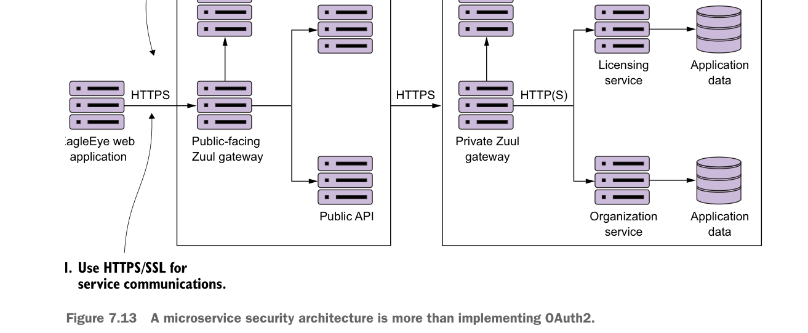

A microservice security architecture is more than implementing OAuth2.
much easier than doing a migration project after your application and microservices are in production.
Use a services gateway to access your microservices
The individual servers, service endpoints, and ports your services are running on should never be directly accessible to the client. Instead, use a services gateway to act as an entry point and gatekeeper for your service calls. Configure the network layer on the operating system or container your microservices are running in to only accept traffic from the services gateway.
Remember, the services gateway can act as a policy enforcement point (PEP) that can be enforced against all services. Putting service calls through a services gateway such as Zuul allows you to be consistent in how you’re securing and auditing your services. A service gateway also allows you to lock down what port and endpoints you’re going to expose to the outside world.
Zone your services into a public API and private API
Security in general is all about building layers of accessing and enforcing the concept of least privilege. Least privilege is the concept that a user should have the bare minimum network access and privileges to do their day-to-day job. To this end, you should implement least-privilege by separating your services into two distinct zones: public and private.